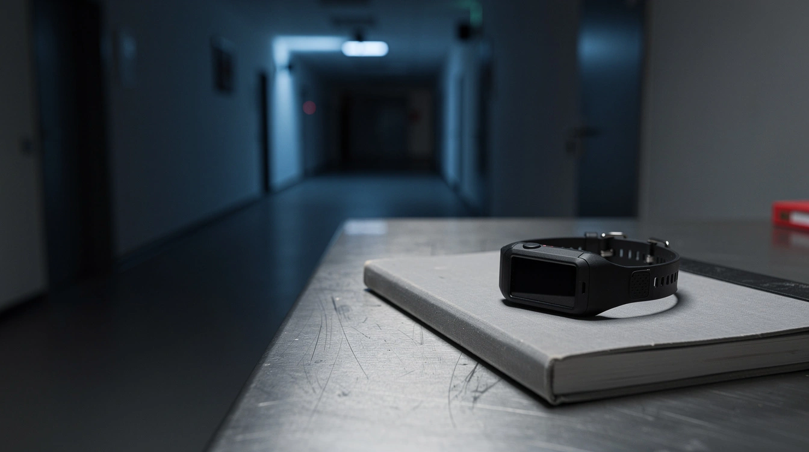

Die Debatte nach den Toten

Jetzt wird über Fußfesseln geredet.
Der Täter ist tot. Eine Frau ist tot. Neunundzwanzig Menschen wurden am Rand des Berliner CSD verletzt. Und plötzlich diskutiert Deutschland darüber, wie islamistische Gefährder überwacht werden.
Abdul B. war kein Unbekannter. Den Behörden war er als Gefährder bekannt. Er hatte mehrfach versucht, sich dem IS anzuschließen. Nach seiner Rückkehr nach Deutschland wurde er festgenommen, Ende Mai wegen Vorbereitung einer schweren staatsgefährdenden Tat zu einer Jugendstrafe auf Bewährung verurteilt. Er war einem Deradikalisierungsprogramm zugewiesen.
Jetzt kommt die Debatte: härteres Terrorstrafrecht, engere Überwachung, Fußfessel. Der Terrorismusexperte Guido Steinberg sagt beim ORF, eine längere Haft allein hätte den Anschlag womöglich nicht verhindert. Entscheidend sei deshalb eine strengere Überwachung. Der Deradikalisierungsexperte Moussa Al-Hassan Diaw hält auch eine längere Haft in diesem Fall für möglich.
Beides zeigt das Problem. Eine Fußfessel ersetzt keine funktionierende Justiz. Und eine Bewährungsstrafe ersetzt keinen Schutz der Öffentlichkeit.
Die Frage ist nicht, ob jeder Gefährder für immer weggesperrt werden kann. Das kann ein Rechtsstaat nicht. Die Frage ist kleiner. Und härter: Warum wird ein Mann, dem der Staat einen Anschlag zutraut, der sich dem IS anschließen wollte und wegen der Vorbereitung einer staatsgefährdenden Tat verurteilt wurde, wieder freigelassen?
Für diese Frage gab es längst einen politischen Absender. Die AfD beantragte bereits 2021 Rechtsgrundlagen für Präventivgewahrsam für Gefährder auf Bundesebene. Der Antrag wurde mit den Stimmen aller anderen Fraktionen abgelehnt.
Das bedeutet nicht, dass jede Forderung der AfD richtig war. Präventivgewahrsam und Fußfessel sind nicht dasselbe. Und die verfassungsrechtlichen Grenzen gelten auch dann, wenn die Gefahr groß ist.
Aber die Debatte war da. Die Mehrheit entschied sich dagegen.
Erst als ein bekannter Islamist am CSD tötet, wird aus der alten Forderung eine Expertenfrage im Abendprogramm. Dann heißt sie nicht mehr Präventivgewahrsam. Dann heißt sie „engere Überwachung“. Nicht mehr zu hart. Sondern vielleicht doch nötig.
Der Unterschied liegt nicht in der Gefahr. Der Unterschied liegt im Absender.
Abdul B. war bekannt, verurteilt und betreut. Es fehlte nicht an Akten. Es fehlte an einer Entscheidung, die Akte ernst zu nehmen.
Und jetzt beginnt die Debatte nach den Toten.
Mehr dazu: Die tödlichste Kategorie · Deutscher, sagt der Pass